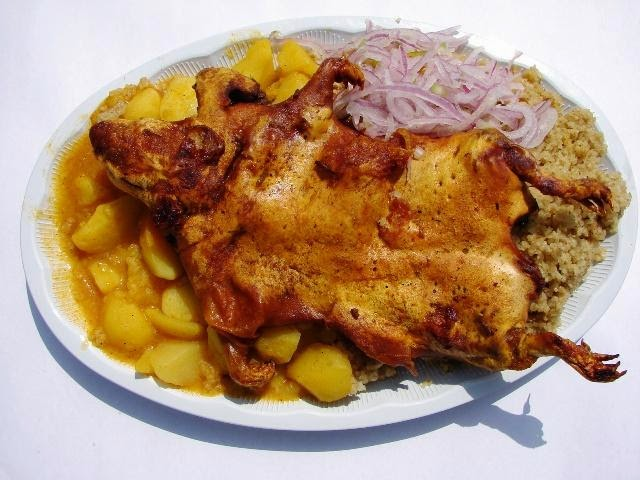
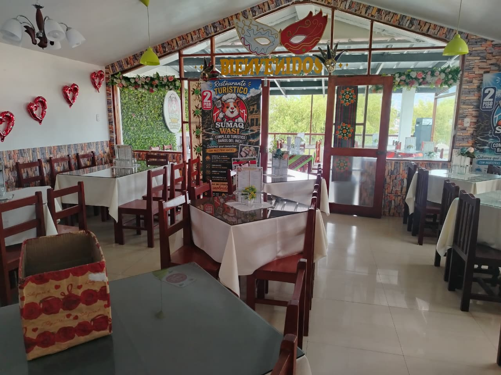
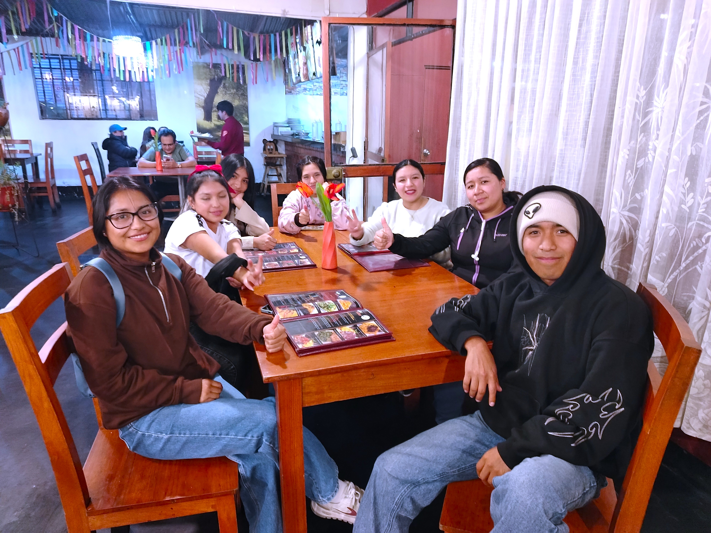
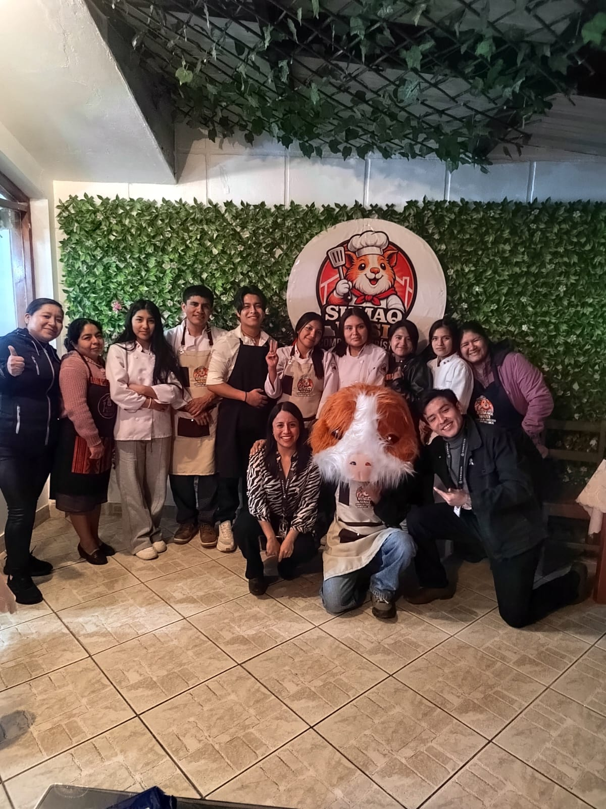
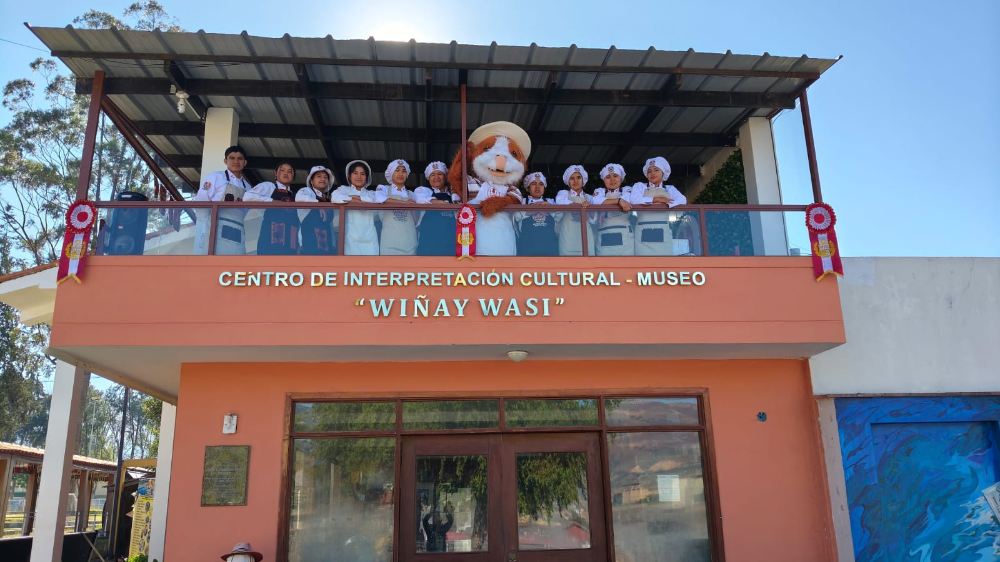
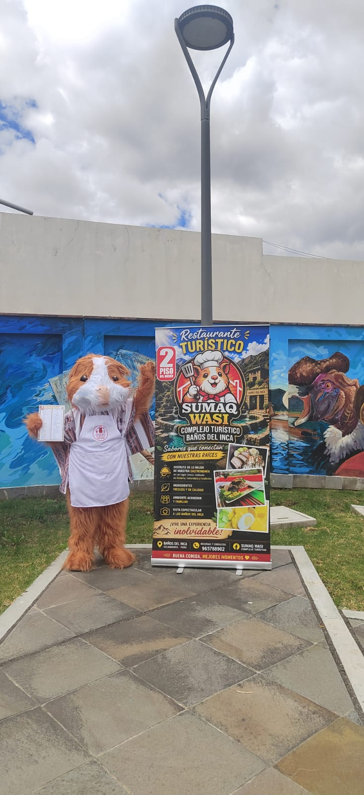

Bienvenido a
Sumaq Wasi, la casa hermosa de la cocina cajamarquina
En quechua, "sumaq wasi" significa casa hermosa. Aquí revivimos las recetas de la sierra de Cajamarca: cuy frito, chicharrón, humitas y quesillo, preparados como en la chacra, para compartir en familia.

images/hero-principal.jpg
Cajamarquino
Auténtico

images/local-restaurante.jpg
Nuestra historia
Cocina de campo, servida con cariño
Sumaq Wasi nació de la receta de la abuela y del cariño por la tierra cajamarquina. Cada plato que sale de nuestra cocina respeta los tiempos, los ingredientes de la zona y las técnicas que se heredan de generación en generación.
Trabajamos con productores locales: el maíz de la chacra, el quesillo de las lecherías cajamarquinas y las hierbas frescas de nuestro propio huerto.
- 01 Ingredientes frescos y de productores locales de Cajamarca
- 02 Recetas tradicionales, sin atajos
- 03 Ambiente familiar, ideal para compartir
Lo más pedido
Sabores que representan Cajamarca
Una probadita de nuestra carta. Entra al menú completo para ver todos los platos, su preparación y sus características.
Galería
Un vistazo a Sumaq Wasi
Fotos de nuestro local, nuestros platos y momentos compartidos en familia.






Visítanos
Te esperamos en Cajamarca
Dirección
Complejo turístico Baños Del Inca
(en el segundo piso del museo "Wiñay Wasi")
Horario
Lunes a domingo, 8:00 a.m. - 5:00 p.m.
Reservas
+51 965 788 902 (WhatsApp)Síguenos
@angelito_165_Unicación en google maps
¿Listo para probar Cajamarca en un plato?
Reserva tu mesa por WhatsApp o síguenos en TikTok para ver cómo preparamos cada receta.